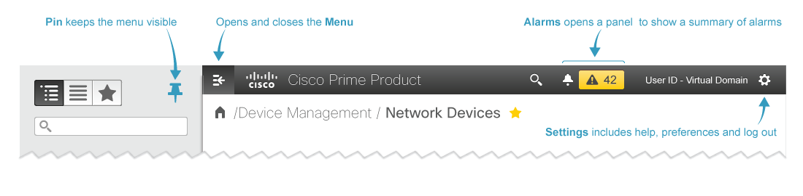

<div>
    <ol class="breadcrumb" id="breadcrumb"></ol>
    <br/>
    
    <p>Welcome to reference app using xwt-lite!</p>
    
</div>

<script>
    jQuery('#breadcrumb').breadcrumb({
        items: [{
            label: '<b>/ Home</b>'
        }]
    });
</script>
